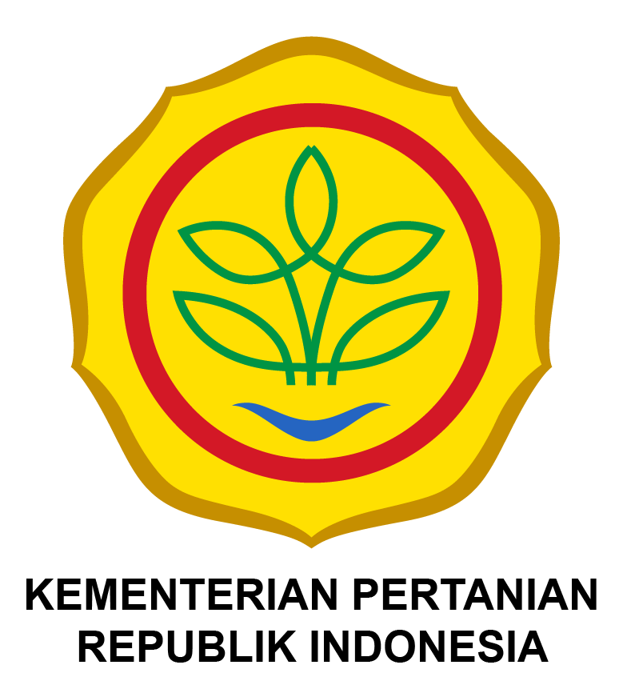

KELOMPOK TANI
CILALANANG TANI JAYA
Desa : Cikawung
Kecamatan : Terisi
Kabupaten : Indramayu
Blok Jatireja, Desa Cikawung, Kecamatan Terisi
Kabupaten Indramayu, Jawa Barat
Kelompok Tani Binaan Dinas Pertanian Kabupaten Indramayu

| No | Nama | NIK | Tempat,Tanggal lahir | Alamat | Jenis Kelamin | No Anggota | Luas Lahan | Lokasi Petak | Status |
|---|